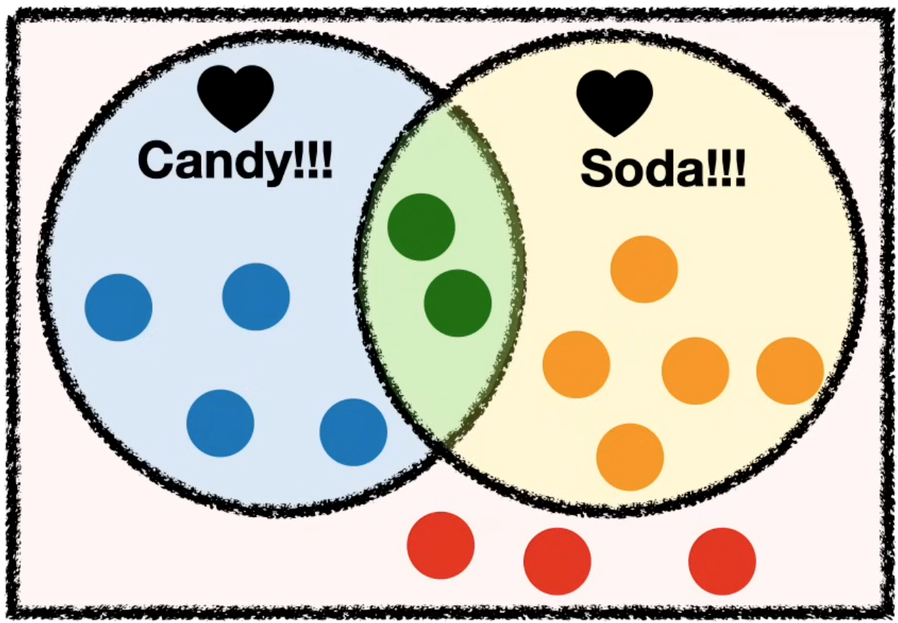

Bayes’ Rule
title: Conditional Probability & Bayes Rule¶
Resources - StatQuest: Conditional Probability (YouTube) - StatQuest: Bayes' Rule - 3Blue1Brown: Bayes theorem, the geometry of changing beliefs

| Loves Candy | Does not Love Candy | Row Total | |
|---|---|---|---|
| Loves Soda | 2 \(p=\frac{2}{14}\) |
5 \(p=\frac{5}{14}\) |
2+5=7 \(p=\frac{7}{14}\) |
| Does not Loves Soda | 4 \(p=\frac{4}{14}\) |
3 \(p=\frac{3}{14}\) |
4+3=7 \(p=\frac{7}{14}\) |
| Column total | 2+4=6 \(p=\frac{6}{14}\) |
5+3=8 \(p=\frac{8}{14}\) |
|
| ##### Probabilities | |||
| \(p(\text{loves candy and soda}) =\frac{2}{14}=0.14\) | |||
| \(p(\text{does not love candy but love soda}) =\frac{5}{14}=0.36\) | |||
| ##### Conditional probabilities | |||
| - probability of someone loving candy and soda given that we know they love soda: \(p(\text{loves candy and soda}\vert\text{loves soda}) =\frac{2}{2+5}=0.29\) | |||
| - probability of someone does not love candy, given that we know they love soda: \(p(\text{does not love candy but love soda}\vert\text{loves soda}) =\frac{5}{2+5}=0.71\) | |||
| Dividing the numerator and denominator by the total number of people 14, the equation above becomes: | |||
| \(\(p(\text{does not love candy but love soda}\vert\text{loves soda}) =\frac{\frac{5}{14}}{\frac{2+5}{14}}=\frac{p(\text{does not love candy but love soda})}{p(\text{loves soda})}=0.71\)\) | |||
| To generalize: | |||
| \(\(p(\text{something will happen}\vert\text{we know})=\frac{p(\text{something will happen})}{p(\text{we know})}\)\) |
So the conditional probability is the probability that something will happen scaled by whatever knowledge we already have about the event
Bayes’ Theorem¶
Taking the conditional probabilities from the section above, we can calculate: - probability of someone does not love candy, given that we know they love soda: \(p(\text{does not love candy but love soda}\vert\text{loves soda}) =\frac{5}{2+5}=0.71\) - probability of someone does not love candy but love soda, given that we know they does not love candy: \(p(\text{does not love candy but love soda}\vert\text{does not love candy}) =\frac{5}{5+3}=0.63\) In both cases above, we want to know the probability of the same event, meeting someone who does not love candy but loves soda. This means that the numerators are the same in both cases. However since we have different prior knowledge in each case, we scale the probabilities of the events differently. So ultimately we get different probabilities.
Now, what if we do not know the probability of someone does not love candy but love soda, which is the numerator in the cases above, we can still multiply both sides of the top equation by \(p(\text{loves soda})\) from the equation:
\(p(\text{does not love candy but love soda})\ = p(\text{does not love candy but love soda}\vert\text{loves soda})p(\text{loves soda})\)
So overall, what we have is:
\(\(\frac{p(\text{no love c \& love s}\vert\text{love s})p(\text{love s})}{p(\text{love s})}=\frac{p(\text{no love c \& love s}\vert\text{no love c})p(\text{no love c})}{p(\text{love s})}\)\)
leading to:
\(\(p(\text{no love c \& love s}\vert\text{love s})=\frac{p(\text{no love c \& love s}\vert\text{no love c})p(\text{no love c})}{p(\text{love s})}\)\)
In general, the Bayes' theorem can be represented by event A and B in the following form: \(\(p(\text{A\&B}\vert\text{B})=\frac{p(\text{A\&B}\vert\text{A})\times p(\text{A})}{p(\text{B})}\)\) Or in the other way around: \(\(p(\text{A\&B}\vert\text{A})=\frac{p(\text{A\&B}\vert\text{B})\times p(\text{B})}{p(\text{A})}\)\) the conditional probability given that we know one thing about an event can be derived from knowing the other thing about the event.
Bayes' Theorem is the basis for Bayesian Statistics, which is this equation, paired with a broader philosophy of how statistics should be calculated.